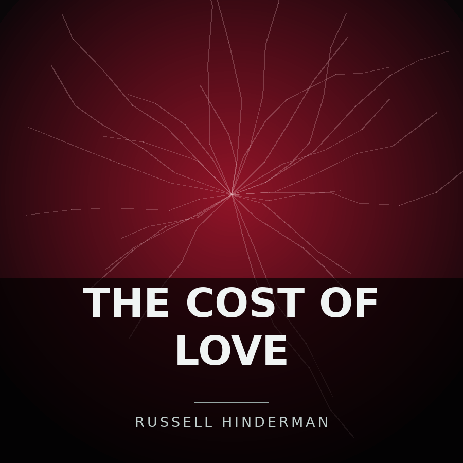

Back to all releases on the Music page
This is the release page for The cost of love. Below the cover art there are three sections, in this order: Release Details, Track Listing, and Stream This Release. After that comes a small navigation area with links to the previous and next releases by date and back to the Music page, followed by the page footer.

Release Details
- Artist
- Russell Hinderman
- Written by
- Russell Hinderman
- Format
- Album
- Genre
- Metal
- Release date
- July 26, 2026
- Label
- Breaking barriers records
- Tracks
- 14
- Running time
- 1 hour 24 minutes 5 seconds
The cost of love is an album of 14 tracks released on July 26, 2026, running 1 hour 24 minutes 5 seconds in total. The longest track is The question of warmth at 10:49, and the shortest is Does love close or open doors at 2:38.
With 14 tracks it is the largest release in the catalog.
Track Listing
| Number | Title | Length |
|---|---|---|
| 1 | A darker side | 4:53 |
| 2 | Does love close or open doors | 2:38 |
| 3 | Warm Or Cold | 6:30 |
| 4 | Loving Someone | 6:05 |
| 5 | The Removal of normalities | 3:40 |
| 6 | Fight for dominance | 7:32 |
| 7 | Does love last | 8:00 |
| 8 | The rough edges of love | 6:22 |
| 9 | The question of warmth | 10:49 |
| 10 | Love to bits | 4:18 |
| 11 | Your formal breakup letter | 3:35 |
| 12 | The Silence Behind Love | 6:24 |
| 13 | Love is bound by time | 6:01 |
| 14 | Remembrance | 7:17 |
| Total running time | 1:24:05 | |